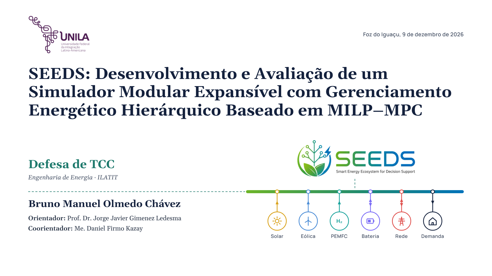
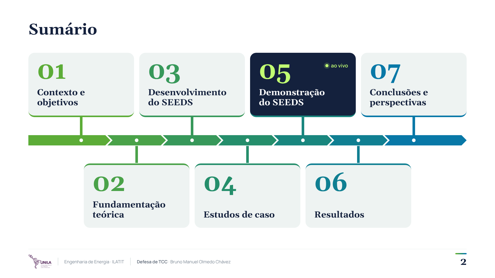
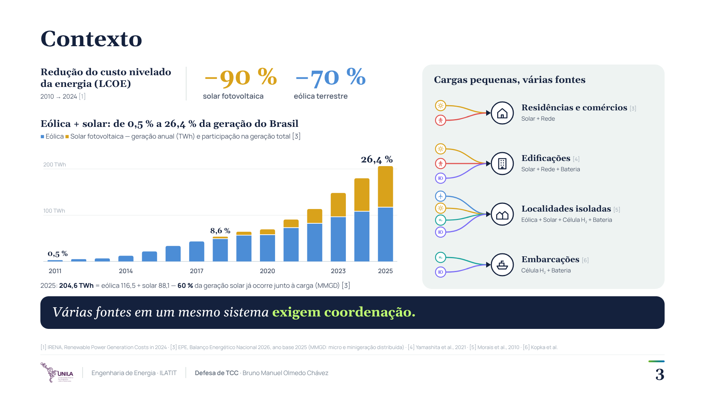
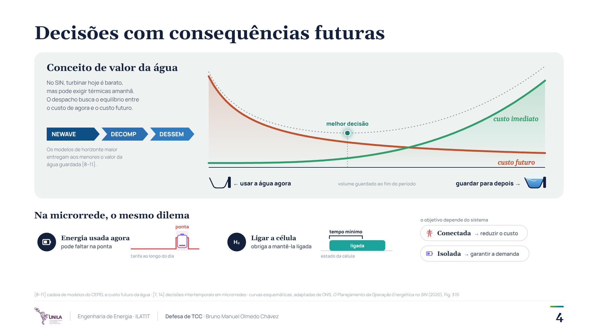
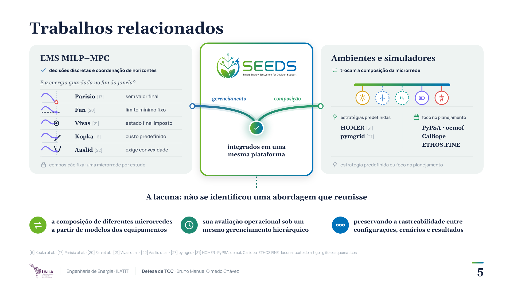
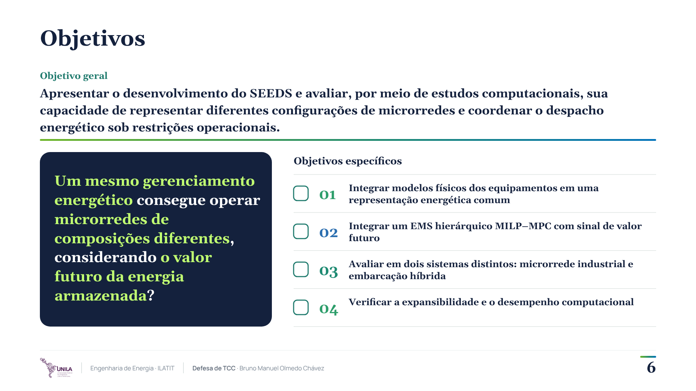
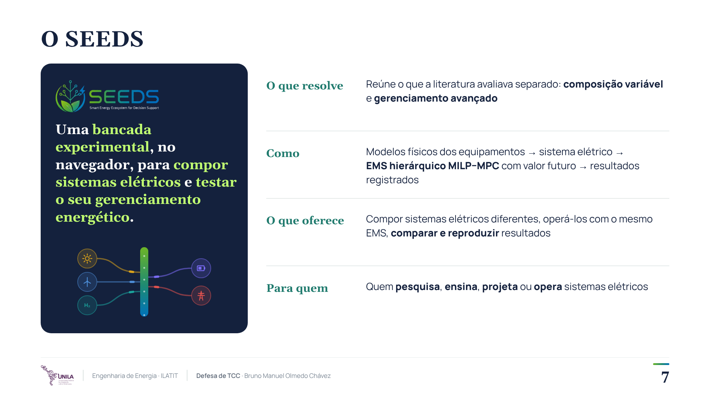

Cada slide tem um cartão com o título, a mensagem que ele precisa deixar na banca, o que vai na tela, o motivo de existir, os vínculos com outros slides e uma fala-guia — uma ideia para treinar, não um texto para decorar. Os números de tempo somam 29 min 25 s, deixando 35 s de margem.







| Tempo | Ação | O que dizer |
|---|---|---|
| 0:00–0:30 | Gestor de Microrredes: as duas microrredes no catálogo | Cada microrrede é uma instalação independente, com inventário e histórico próprios. |
| 0:30–1:45 | CT-046 → Centro de Operação → cenário C4 → etapas 01–04 | São as cinco etapas que mostrei; a estratégia do EMS é declarada aqui, com procedência. |
| 1:45–2:45 | Abrir a rodada C4 (14d8e5b3) na Partitura, lente Operação | É a mesma operação da Figura 7.1, aberta sem chamar o solver: o SEEDS refez a verificação a partir dos registros. |
| 2:45–3:30 | EMB-H2-120 → cenário C6 preparado: SOC 12 % e sem reserva final | Mudo só o estado da bateria e retiro a reserva. Nada na formulação muda. |
| 3:30–4:45 | Verificação → EXECUTAR → painel de execução | A cada janela, o planejador emite o sinal, o MILP resolve, a solução é verificada e o primeiro intervalo é aplicado. |
| 4:45–5:45 | Resultado: 4,163 kg de H₂ | O mesmo valor do artigo para o C6 — quase o dobro do C5. |
| 5:45–6:00 | Voltar aos slides | A demonstração mostrou como; agora, o que os resultados dizem. |
Ficam depois do slide 27 e só aparecem se a banca perguntar. Lista provisória, a reorganizar.
| # | Título | Conteúdo |
|---|---|---|
| A1 | Solver e configuração | Pyomo 6.10.1 (pyomo.contrib.solver «highs») + highspy 1.15.1; gap 0; 1 thread; semente 0; 60 s; aceitação só após auditoria |
| A2 | Do inventário ao MILP | seeds2 → integracao_v2/montagem.py → modelos físicos antes → ems_v2 (MILP por janela) → registros selados → auditoria |
| A3 | Formulação completa da janela | Núcleo físico, commitment (rampas, permanências), PCC e termo terminal linear por partes com binárias, sem SOS |
| A4 | Reotimização paramétrica | Cada ponto = MILP auditado; refinamento por bissecção; uma função por modo; por que não duais |
| A5 | Curva H₂ da PEMFC | 15 vértices, 500 pontos de teste, erro máx. 0,087 %, nunca subestima |
| A6 | Parâmetros CT-046 | Tabelas 6.1 e 6.2 |
| A7 | Parâmetros da embarcação | Tabela 6.3 e condições da PEMFC |
| A8 | Literatura detalhada | Trabalho × capacidades, só com o que o artigo afirma |
| A9 | C3 e o estoque inicial | R$ 290,84 evitados na ponta − R$ 54,90 fora; ciclo do dia ≈ R$ 217,31 |
| A10 | Por que C4 = C2 + C3 | FV sempre abaixo da demanda; tarifa fora de ponta única |
| A11 | Da V1.6 à V2 | SLSQP + metaheurísticas → MILP–MPC com auditoria |
| A12 | Sinal do planejador | Inclinações de 1,416 e 0,466 R$/kWh na bancada de expansibilidade |
| A13 | Mecanismo × formulação ideal | Previsão determinística; interpolação nos pontos; horizonte finito |
| A14 | Rastreabilidade | IDs das rodadas e reabertura verificada sem solver |
| A15 | Previsão perfeita e MPC | Horizonte finito exige coordenação; estrutura pronta para previsão ≠ realização |